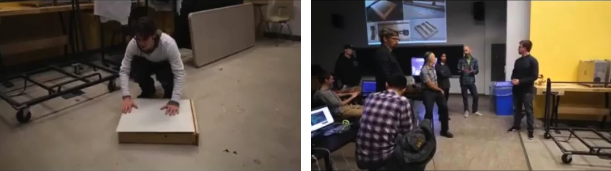
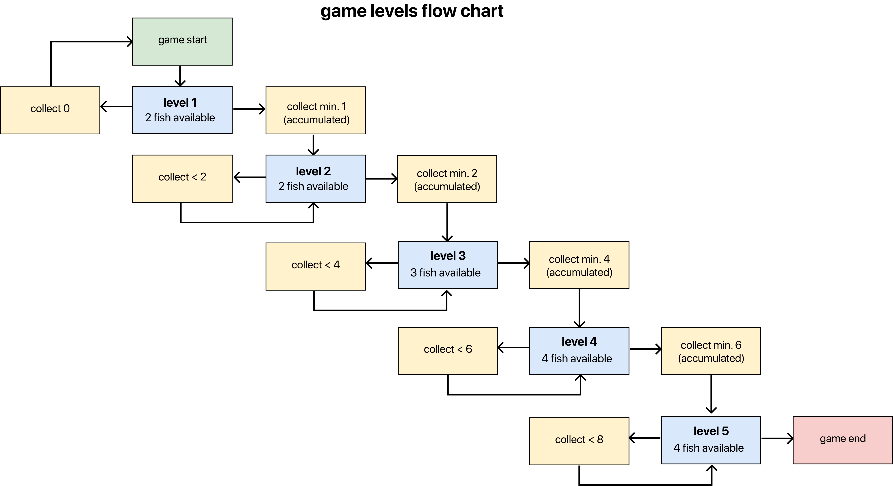
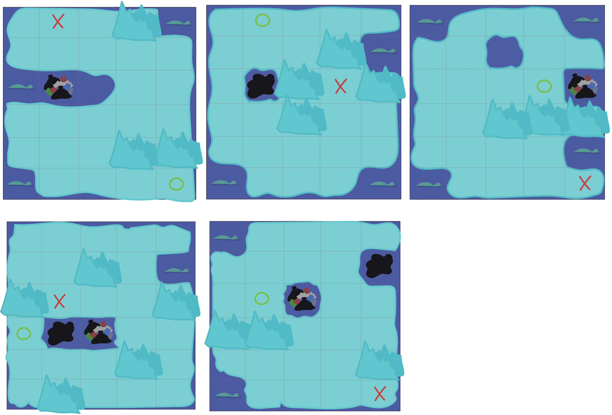
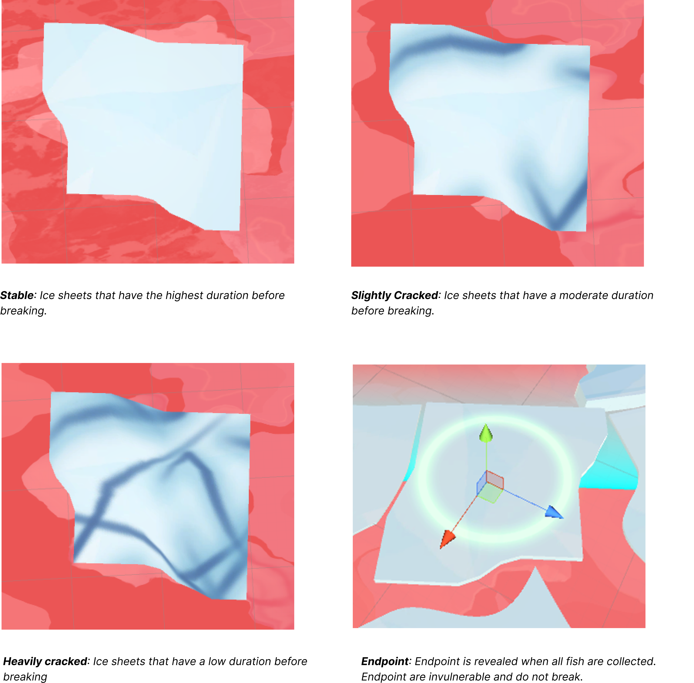

North Bear
game designer
game design, technical writing, unity, creative
4 months
summary
A collaborated with several other students to design a 3D Virtual Reality survival game that aims to raise the awareness of climate change.
background
As part of Canada’s celebration of 150 years of confederation, North Bear was created as part of a collaborative group project to represent Canada’s identity. From themes and works expressed by Norman McLaren, North Bear aims to raise the tremendous concern of global warming and its impact on Canada, and the world.
what i did
- Collaborated with other students on overall creative direction of the game
- Designed and created the levels.
- Designed and fine-tuned every gameplay functionality.
- Implemented cut scenes and animation sequences.
development process
The project was originally conceived as a physical installation. Early concepts and prototyping involved gameplay in a physical space on a pressure sensitive LED enabled floor. Gameplay had consisted of two experiences:
1) In the first experience, players are asked to explore the game world either by completing an objective or simply walking through the piece. The ice sheets will consist of four colours that indicate its state: green (temporary solution) indicates a collectible or a viewable players can go to; white indicates that the ice sheet is walkable and in stable condition; light blue indicates that the ice sheet is still walkable but is in an unstable state and on the verge of breaking; blue indicates that the area is unwalkable and players standing in a blue ice sheet will provoke negative effects (more unstable ice sheets) if a player is standing on a blue tile. Standing on a white tile for a long period of time will provoke changes to its current state; gradually changing from white to blue (hence breaking)
2) In the second experience, players engage in a small minigame outside the LED floors; building blocks of iceberg and stacking them like a snowman. Over time the blocks would "melt" (fall over) allowing new participants to rebuild the icebergs. Rebuilding the icebergs help the state of the LED floors in the first experience preventing the ice sheets from melting as quickly and being more stable.

However, due to budget uncertainty and its possible restrictions, the game was ultimately changed to a Virtual Reality experience to reduce cost of physical material with more of focus on game design. Like the physical design, the foundation was laid out for what features would be in the game. The challenge was adding/adjusting to the new features that a virtual game differs and making the adjustments. Ultimately as a group, we narrowed the design goals to as such:
- The game should appeal to a large number of people. The goal is to raise awareness of climate change.
- It should be intuitive to play. The game relies on the player to move around in the space.
- Changes from a physical to a virtual design should be orthogonal.
- Game should account for physical space and overall physicality of VR.
- Identifying the development constraints that can affect game mechanics and design
objective
A critical core concept throughout was facilitating a self-identification with the struggle of animals like the polar bear. Originally the objective was to have live collectibles in the installation that players had to transfer from place to place (within the installation); to encourage them to move around on the LED floors and experience the same difficulties of climate change. Players would have to strategically make their steps as to not fall into the "water". Similarly to the game "the floor is lava", players are encouraged to jump around on the LED floors adding to the game's unique game mechanic. For players unwilling and/or cannot participate as part of this activity, a minigame was developed to accommadate these players.
However because of our change to a virtual experience, the focus on the experience and creating the desired "transformational dreamtime" was reimagined as a personal journey. The player, now a polar bear, and mother of 3 cubs, must find food for their young ones and face the reality that is climate change. Players must still take strategical steps to avoid falling into the water reserving that same mechanic.

level design
Early prototyping on the HTC Vive headset showed a very limited quantity of space available for level design and the game mechanics had to be adjusted to fit this scale.
As a result, the game is played through levels to accommadate for the limited live space and for further exploration of the world. Players are required to collect a minimum number of collectibles (fish) to advance to the next level. However, collecting more than the required will change the outcome of the game. Once the number of required fish are caught, an indicator will reveal where the players should go next.
Concepts for levels had starting and end points as the same locations for two different levels. This is done to keep the player from going somewhere outside the physical space available when they advance.
Game consists of 5 total levels. Each level becomes progressively harder: with ice sheet being less durable, more fish to collect, and more obstacles to obstruct view and movement. Each level also has its own unique obstacle which includes icebergs and garbage; that block the path of the player. Players who walked into the obstacle will be given a warning to leave the obstacle before a faint is counted on their polar bear and they lose a fish. Depending on the player's performance, not gathering enough fish can have great affect on the final outcome.
levels 1 -> 5
Game mapping is built upon the concept art for the levels. The map is designed as a large environment where only portion of the maps are played at a time as levels. Outside the playing area, the game features various 3D models and animations to add to the theme of an Arctic Canada. As the game ends, a sequence for an animation/cut scene will be called.
art style + design

ice sheets
Standing on the ice sheet will deterioriote the ground below you. The idea is to strategically move from around sheet to sheet. The game hinges on making smart paths as to not backtrack and cause the ice to deteriorate. There are 4 states for ice sheets.

game over
The player faints when they are no longer standing on top a walkable ice sheet and falls into the ocean. There is a short duration where the player can stay in the water before fainting. When the player faints, they will lose one of their fish changing their outcome for the game. If the minimum numbers of fishes are no longer reached as a result of multiple faints, the player loses the game.
A faint results in the game restarting the player back to their current level. Players will be prompted to return to a marked ice sheet on the map to represent the start before the level begins.
ending
The player will be locked in their position but should be able to move their head such that they can still observe. There will be 3 ending/cut scenes based on the outcome of the player's result collecting fish.
- High threshold of fish: Ending will result in a happy ending.
- Medium threshold of fish: Only some cubs are fed.
- Lost: No cubs are fed.